Week 1. Introduction#
TL;DR [slides]
Language technology is everywhere.
And it’s pretty impressive – but sometimes fails.
Linguistics equips us with ways of locating these failures and sometimes explain them.
This course will center around the point where language technology and linguistics meet. Let’s start by introducing each of these fields.
Here is what I mean by language technology:
Important notion
The term ‘language technology’ describes systems that allow people to communicate to computers in natural language (English, Dutch..) rather than computer languages (Python, Prolog..), as well as systems that help do useful things with natural language.
This is, admittedly, pretty vague, but enough for our purposes. Let’s say, whatever computers (in the broad sense! including, for instance, our phones, smart watches etc.) do that requires analysing input in natural language and/or producing output in natural language, will count as language technology. I don’t think there’s anyone among the readers of these notes who hasn’t used some type of language technology in the past. If you think you haven’t, I am almost sure you’re wrong!
It’s often really mind-blowing what kinds of things these systems can do and how good at it they are becoming. We all witnessed this last December when ChatGPT came out:
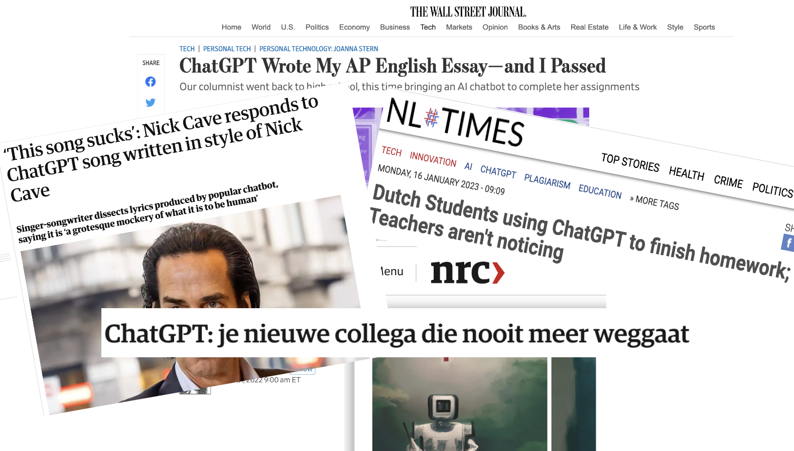{kind=link}
We all played with it and made it do all sorts of wild things that maybe were not directly useful but borderline mind-blowing:
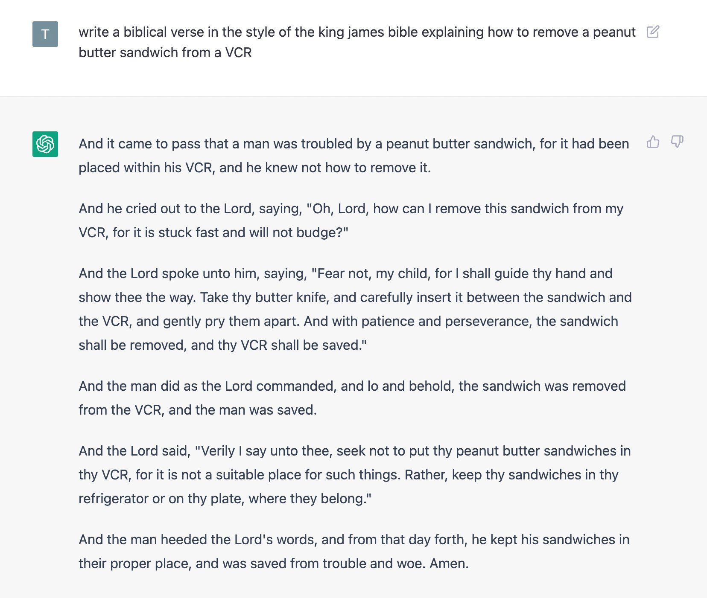{kind=link}
Since then, it has found its place among other instruments of the same family we use every day, often without consciously registering the fact that we are using them and how deeply these instruments are embedded in our daily life.
A tiny question along the way
Before you read any further, try to recall at least three language technology systems you interacted with today.
For example, language technology powers text auto-complete and auto-correct services built into messengers on your phone, in text editors where you write your homework assignments, in web-interfaces to your email, or work as stand-alone services. Here’s one prominent example of such service, Grammarly, which analyzes input text, finds potential mistakes and makes suggestions for improvement. Let’s see what it thinks about my syllabus:
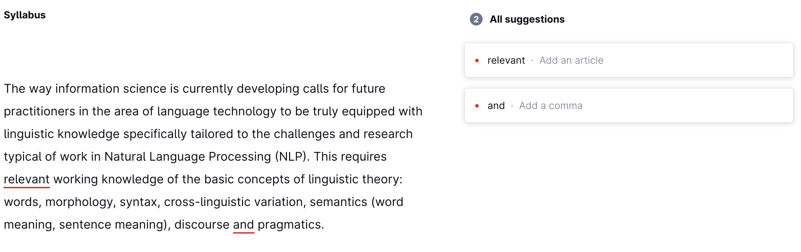{kind=link}
A tiny question along the way
Do you agree with Grammarly’s advice?
Another example of language technology that we all have been using regularly for years now – at least I know I have – is machine translation. For example, if I had to translate this text from Hungarian, I could’ve spent a lot of time with a grammar and a dictionary and still gotten a lot of it wrong without something like Google Translate:
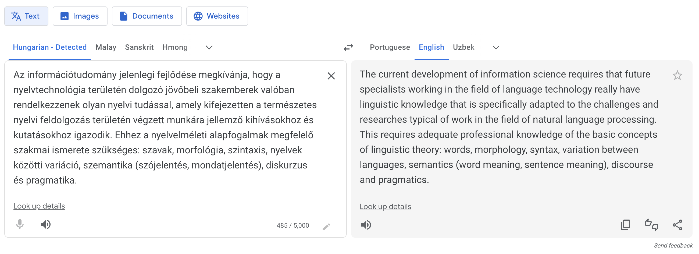{kind=link}
A classic area of language technology is creation of artificial conversational agents: systems that, basically, allow you to talk to a computer as if you are talking to a person – a long-standing self-fulfilling futuristic dream. Some of these agents are designed as means of interacting with other systems on your device or online (setting alarm clocks, booking flights, playing songs etc.), while others exist for their own sake – just there for you when you want to talk to someone (Replika is one example). Such agents can be embedded into complex worlds of games and interactive experiences and have conversations with users in a way that’s compatible with their persona and the world they are in. For instance, you can talk to Santa and discuss technical details of how he manages to squeeze down the chimney (Santa by InWorld):
In a series of relatively recent breakthroughs, systems aligning language and vision learned to generate quite impressive images from scratch (rather then select already existing images from datasets) just by descriptions in natural language. Here are three such images from three different systems, all using the same prompt A blue jay standing on a large basket of rainbow macarons:

These are pretty good! And I am sure by the time you read these notes these will seem much less impressive compared to the most recent state of the art – progress in this domain is extremely fast.
It works the other way around too – we have systems that, given an image, can output a pretty accurate description of what we see in it, in fluent English:
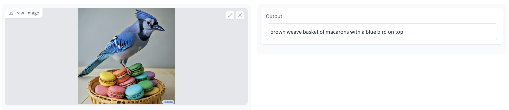{kind=link}
The list of systems built around automatic analysis of human language is very very long – there are models that automatically classify opinions as good or bad (sentiment analysis), rewrite texts in a different style (style transfer), answers questions and much much more. It’s impossible and unnecessary for me to talk about them all here: during your Information Science studies you will have ample chance to dive into all this technology. The list above serves two purposes:
Convince you that now is exciting time to be working in the field where all these breakthroughs are happening!
Prepare the grounds to show you how linguistics can be useful in this journey.
Let’s move on to this second point!
Motivating Linguistics for LangTech#
That’s all great, but the fact that all these systems are dealing with language doesn’t itself mean that we need to be linguists to interact with them, does it? Of course it doesn’t, that’s the whole point of these systems – to interact with us seamlessly, so we don’t need to think about the details of how it happens.
But here is something to think about: even though the current language technology is often impressive, it is far from perfect. As a user, you are in a better position if you know where the weak points of these systems are, how to identify them, how to understand the patterns behind these failures. This will give you an obvious advantage in the world where language technology is intertwined with almost everything we do and we are tempted to rely on it rather than use it critically. Don’t! Or, if you do, know the risks and where and why it is likely to fail.
As a practitioner and future expert in the area of language technology, you need this too – and more. When you build and evaluate such systems, you will need to know at least the following:
Ways to systematically test the system’s linguistic knowledge and behaviour. What should these tests contain and look like? How do we know what to look for?
A system is typically good in some aspects of its linguistic behaviour and bad in others. What are these ‘aspects’? What components does linguistic capability consist of?
Even though a lot of today’s language technology is end-to-end, it hasn’t always been the case and is likely not to be 100% the case in the future. If you deal with a component that produces technical linguistic analysis as an intermediate step for something else, you need to know what is going on there.
Even end-to-end models sometimes benefit from some explicit linguistic information during training. You need to know what kind of information this can be and how it can be formulated and represented.
In short – if we want our technology to behave linguistically like humans do, we need to know in good detail how human language works, in order to be able to articulate this goal. Linguistics gives us the tools for this.
Discussion point
Should language technology exactly mimic humans’ linguistic behaviour, or can it differ from humans in some way? Can AI be better at language than humans? What would it mean if it could?
Let’s go over some illustrative examples.
Example 1: What words can’t do#
Sometimes, generating an image from a description in natural language goes wrong. It can go wrong in many ways – on the image generation side or on the side of language understanding. Here are some examples of generated images with the corresponding text prompts that were used to generate them:
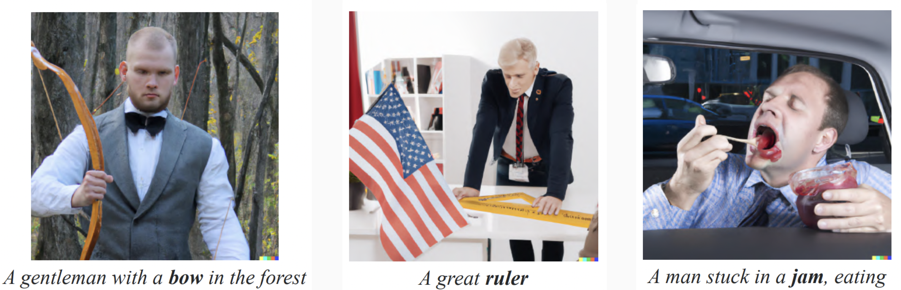{kind=link}
The images don’t seem adequate but in a way that might be hard to pin down. It might be worth taking a moment to think what exactly goes wrong in them. The weirdness has something to do with the words in bold: each of these words – bow, ruler, jam – is ambiguous (has more than one meaning); bow can mean either the weapon or the type of tie; ruler is someone who rules or the thing you draw lines with; jam is a traffic jam or type of food. There are a lot of words like that in any language and we use them without much trouble, but the text-to-image model here did something with these words that people never do. Check out this sentence with an ambiguous word bank – a financial institution or a line of land next to water:
*I walked up the bank of the river and deposited money in it at 6% per annum.
It sounds odd – how can bank be two things at the same time? That’s not how ambiguous words are used. You have to pick one meaning! And that’s exactly what the text-to-image model failed to do – and that’s why the images it produced look strange given the prompt. The model disobeyed a constraint on words and meanings that every speaker of every language seems to follow without ever thinking about it:
Linguistic fact
Words with many meanings show only one meaning at a time.
What other laws do words and their meanings obey? We will discuss this later in the course. It will be useful to know so that we have criteria to test our systems against!
Example 2: What grammar makes you do#
English third-person singular pronouns show gender distinction: we have he vs. she (vs. they vs. other forms that are embedded in linguistic practice to different degrees). Not all languages require or even allow you to express the gender of the referent on the pronoun. Uzbek is one of the languages that only has one form of a third-person singular pronoun – u – which would be a translation of the whole range of corresponding English third-person singular pronouns:
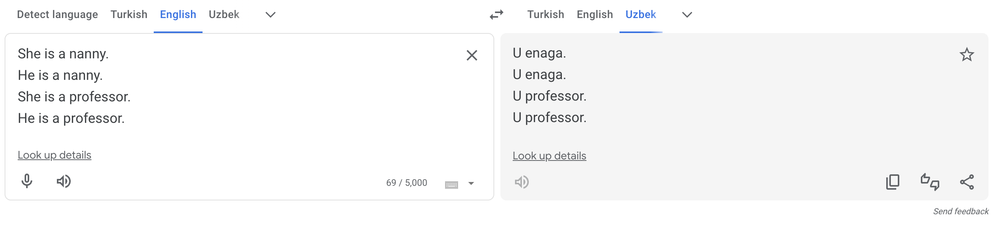{kind=link}
Translating pronouns from English to Uzbek is easy: it’s always u. What about translation in the opposite direction? How should u be translated in each particular case? Here’s what Google Translate does:
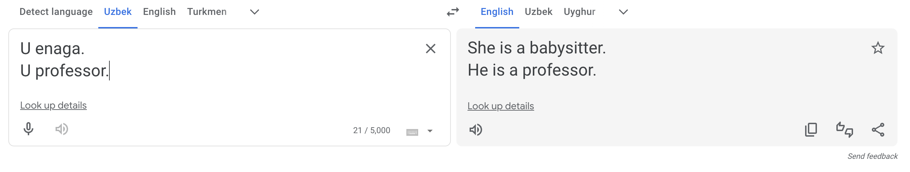{kind=link}
If it’s a babysitter, it’s a she, if it’s a professor, it’s a he. Sad, obviously not true and feeding stereotypes.
Discussion point
What should a translation system do in this case? Do you agree with the solution that Google Translate adopted for translations from Turkish, which has a similar non-gender-marked pronoun system as Uzbek?
Gendered pronouns is just one example of a problem caused by misalignment of grammatical systems. Such misalignments are a massive issue in translation, automatic or not: if the target language grammatically requires speakers to express some information that is absent in the source (because the source language does not require expressing it!), how does the speaker choose? This can sometimes lead to very heated debates, as we know, for example, from the history of Bible translations to various languages (e.g., it’s essential to establish exactly whose father Abraham is, from the speaker’s point of view, in order to choose one of two possible translations of Abraham is our father into the Guarani language).
We will talk a lot about different grammatical systems throughout our course, so stay tuned!
Example 3: Beyond words#
Here is something that is not about words but about how they work together in a sentence. The following two sentences have different meanings, even though they contain exactly the same words – in a different order:
There is some grass in a mug.
There is a mug in some grass.
We know these sentences mean different things because they describe different situations. A system with adequate natural language understanding should be able to distinguish these two meanings and assign each of them to the correct sentence. For example, an image-and-text model that can align images and texts, given two pictures as below and our two sentences, should be able to judge the correct picture-sentence pairs as better matches than incorrect ones:
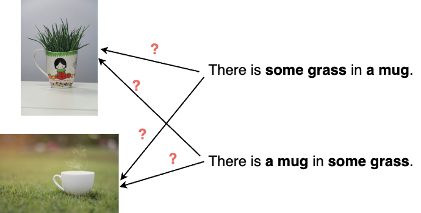{kind=link}
Recent work shows that even the most advanced of current image-and-text models are very bad at this, which is an indication that they are bad at grammar – at least, the aspect that has to do with putting words together to get the meaning of a sentence. See for yourself: I put together a Google Colab that shows how one particular popular model fails at this task. You can try this with other images and text to test the model further.
Oh, by the way, from this example with mugs and grass one might conclude that it’s the order of words that matters for the resulting meaning. Yes and no! Here’s another sentence:
They see a cat with a telescope.
The sentence has two meanings – it can be used to describe two very different kinds of situations, one where telescope is used as an instrument to see a cat; the other where a cat is carrying a telescope. What is the source of these two meanings? It’s not word order, it’s not ambiguity of any particular word. It comes from the implicit way the words relate to each other. In the first reading, telescope somehow ‘relates’ to see; in the second one, to cat.
We will talk a lot about this invisible organization of words into groups later in the course. For now, we can formulate this as a seemingly small but powerful linguistic fact:
Linguistic fact
Sentences are not just bags of words.
Any system that works with natural language should incorporate this aspect of how language is organized, and we should know how to test if it does.
Example 4: Language vs. world#
Finally, a point about a very important distinction that is often overlooked in practical work on language technology: knowledge about the real world vs. linguistic knowledge.
Admittedly, the distinction can be blurry: if you ask ChatGPT about relative sizes of ants and humans and it answers correctly, did it demonstrate knowledge about the world or about language? In fact, both: it correctly reports the sizes of the real-world objects the question is about; but it also figured out what you asked about using language, and answered using language as well. Moreover, it acquired the real-world knowledge via language, since it was trained on texts. This makes these different types of knowledge even harder to disentangle. Humans acquire a lot of real-world knowledge via language too: through books, or through what other people tell us. But we have other types of experience with real world, and a lot of models don’t. Maybe this helps us imagine how things could be if the world were different in one way or the other. What if ants were bigger than humans? They would still be ants and humans, I guess – but with different relative sizes. Easy for us, not so easy for ChatGPT:
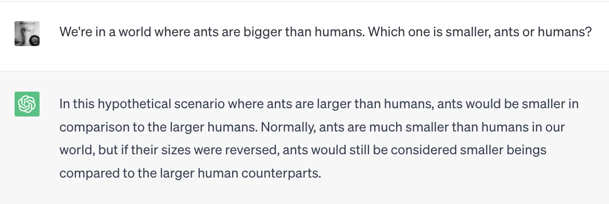{kind=link}
It’s important to keep in mind that the two types of knowledge – linguistic and real-world (sometimes called extra-linguistic) knowledge – are intertwined, but the distinction is still valid: using the correct tense or article shows linguistic knowledge; naming the capital of the Netherlands shows real-world knowledge.
Discussion point
Do you think ants’ size in the real world is part of the meaning of the word ant? If yes, does this make it linguistic information?
What Is Linguistics?#
I hope I convinced you that you are likely to find linguistics useful in the future, and maybe even interesting. So, what is – and what isn’t – linguistics, anyway?
Important notion
Linguistics is the scientific study of human natural language.
Human natural language, as opposed to:
Constructed human languages and other artificial communication systems;
Communication systems of other species.
Linguistics is not:
Learning to speak many languages (even though it’s cool!);
Translating, interpreting, editing texts;
Orthography and punctuation;
Establishing norms of how people should speak.
There are around 7000 languages in the world, and each of these languages is an extremely complex system. Native speakers use language effortlessly, but the internal mechanisms and rules of the language are generally opaque to the speakers – explicit knowledge of what drives each linguistic decision is not needed to successfully speak the language. Linguists, on the other hand, are interested in these hidden mechanisms and rules just like chemists are interested in structure and properties of matter. You don’t need to be a chemist to digest a banana, but a chemist understands how it happens. You don’t need to be a linguist to speak a language, but linguists try to understand how you do it.
Here are some typical questions linguistics is interested in:
Which parts do sentences and words consist of?
What are the regularities behind how these parts can be put together?
What are ‘meanings’? How do words and sentences convey meanings?
What is possible and what is impossible in human language?
How do languages differ from each other?
How do linguists look for answers to these questions? Here are the main methods:
Introspection. If you are a speaker of the language you are interested in, you can address your own linguistic intuition. Yes, you can’t find readily-formulated rules and generalizations this way, but you-linguist can talk to you-speaker and ask yourself linguistically relevant questions (Is this a well-formed sentence? or, Can this sentence describe this situation? etc.). Likely, however, a research paper based only on the author’s introspective judgments will not be published. Not anymore.
Fieldwork is linguistic data collection through interaction with native speakers. Fieldwork is usually conducted for understudied languages in a relatively natural setting – the researcher typically travels to areas where native speakers live. There are extensive protocols for data collection during fieldwork, but I have to admit, it often suffers from the same kinds of subjectivity as introspection does. With fieldwork, however, there’s not much we can do to fix it!
Linguistic experiments strive to be as strict and objective as experiments in chemistry and physics. It’s hard, but it’s a noble goal. Experimental methods in linguistics generally differ in how directly they observe mental processes that are associated with language. Offline experiments do not observe such processes at all – they target linguistic decisions. In an offline experiment, participants are given a linguistic task which requires a response, and later responses are analysed. Online experiments analyse processes that are more automatic and unconscious, but only indirectly reflect the underlying process in the brain: reaction times (rather than actual responses), eye movements. Finally, true online methods use immediate access to brain processes: functional magnet resonance imaging (fMRI) or electroencephalography (EEG). This last group of methods is great, but can be expensive and produce data that’s hard to analyse. There’s a lot that can be done with just the first two.
Corpus studies. Collections of texts – linguistic corpora – are analyzed in all ways imaginable to gain insights into the underlying properties of language that these texts give evidence for. This is pretty close to the field of language technology, and there is quite some interaction between the two.
This, of course, leaves many potential questions unanswered. What does it mean – to gain insight into underlying properties of language? What is linguistic analysis, concretely? What kind of thing is a result of such an analysis? Is it an idea expressed in words? A formula? A computer program? A diagram? An outcome of a statistical test?
In fact, it can be almost any of those things. Let’s take a closer look in the forthcoming weeks – I hope we will get to use a good portion of the methods listed above!
Homework 1
The homework this week will consist of three blocks. One block is informational, just for me to know more about you, the languages you use and whether there’s anything specific you would like to learn in this course. This part will not be graded – you can opt out. Also, you are not expected to be fluent in any programming languages at this point – it’s just for me to figure out whether homework assignment options that are not coding free would make sense during this course. The other two blocks are actual homework assignments. You will have a chance to work on it during the seminar session after the first lecture.
Block 0
Which language(s) do you speak natively? What other languages do you speak and how fluent in them are you?
Can you code? If yes, list your programming languages and how fluent in them you are.
Is there anything particular you would like to learn about linguistics / languages?
Block 1: Fool a model
Interact with a system of your choice and try to find a weakness in it – some non-human-like linguistic behaviour. If you succeed, make a screenshot of the failure you found and describe what happened. If you can’t find problematic behaviour in the model of your choice, document your attempts. Here are some suggestions (but don’t feel limited by them, you can pick any system you like):
Block 2: A toy experiment
You’ve probably seen this or something like this before:
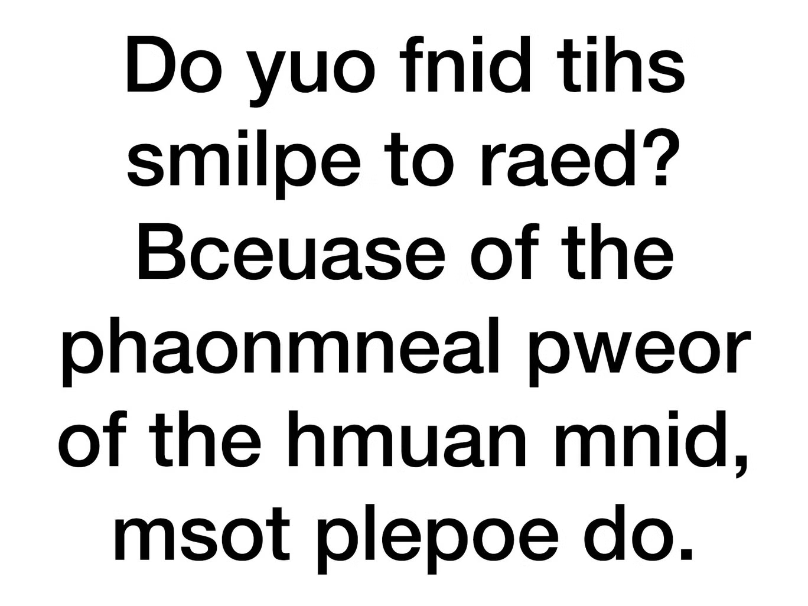{kind=link}
Is this true? How much mix up in letters can we handle when reading texts? How much noise can systems like ChatGPT handle? Same as us? More? Less? I wrote a little script that changes some proportion of letters in a message to random letters, resulting in a noisy text. You can use either this little website or a Colab version of this script if you want more control of the process of introducing noise – feel free to adjust it! You will work in groups, doing one of the following:
Send messages to each other (over any texting app you like) – but run your messages through the noising script. Ask your peers to decode the original message. Try this a decent number of times. For each step, record the original message, the noised message, the level of noise and whether the message was successfully decoded. Form a conclusion about how much noise in written messages people can handle based on your data. Submit both the conclusion and the data.
Interact with ChatGPT or any other text-based system of your choice. Ask the system to decode a message for you (think of a suitable prompt) and present it with a message run through the noising script. Try this a decent number of times. For each step, record the original message, the noised message, the level of noise and whether the message was successfully decoded. Form a conclusion about how much noise in written messages the system can handle based on your data. Submit both the conclusion and the data.